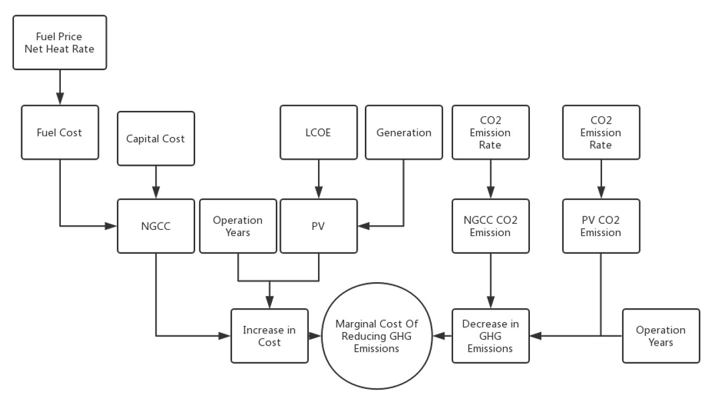
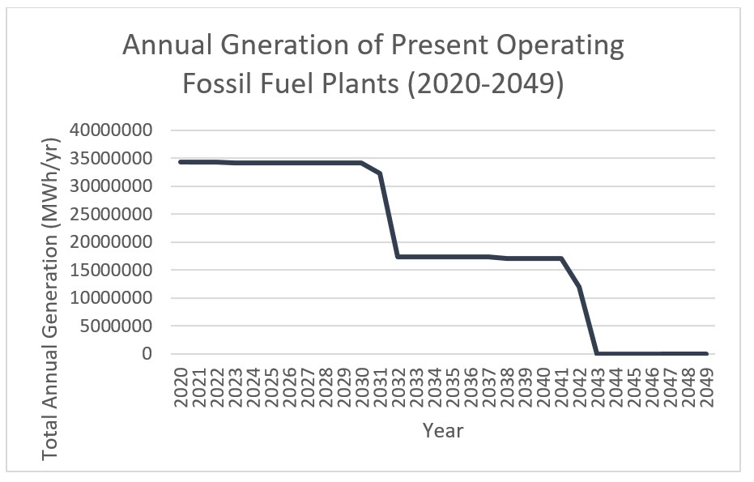

CO2 Avoidance Cost Analysis of Replacing Retired Fossil-Fuel Plants in North Carolina
Introduction
As a feasibility analysis of North Carolina’s Clean Energy Plan published by Department of Environmental Quality, this model briefly evaluated the difference in marginal cost of reducing GHG emissions, i.e. increase in cost over decrease in GHG emissions, if North Carolina starts to replace retired plants with renewable power plants at earlier or later time. A typical NGCC and a solar plant are used as examples to compare 3 ways in their cost of reducing GHG emissions in 2060. The results of the model show that though adopting solar plants in earlier period will result in higher marginal cost, their difference is small, which can make renewable energy plants as a promising alternative considering their environmental advantages. This model is based on data of present operating plants in North Carolina obtained from eGrid2016 and ATB.
Background
 North Carolina recently released a plan to significantly reduce greenhouse gases from electricity production over the next decade. The goal in electricity production sector is to get to zero emissions by 2050 as well as a 60 to 70% reduction from 2005 levels by 2030. In the conservation between Frank Stasio and Professor Pizer from Duke University, they mentioned that though cost of electricity for people in North Carolina will increase, the earlier we transit to renewable energy the better we will benefit in the future. It is clear that if we start earlier, then higher percentage of renewable energy plants will have in the future. This model is designed to evaluate in electricity production sector, whether we will have lower marginal cost to reduce GHG emissions if we start to replace retired fossil fuel fired plants with renewable ones earlier. Solar plants with PV generators are used as an example for renewable energy plants, while NGCC plants are set as the default choice for not using renewable energy.
Assumptions
- US’s natural gas price will remain at the present level for the future decades.
- No technologies breakthrough in PV industries is taken into consideration.
- Assuming the average life span for fossil fuel plans is 30 years.
- If renewable energy plants are not used, the retired plants will be renewed as natural gas plants.
- Electricity demand in North Carolina will remain a stable level in the future decades.
Results and Conclusions
From the results in the chart, we can see replacing more retired plants with solar plants will lead to higher marginal GHG reduction cost. Period 1 is approximately 2.3 times of the second and the second is about 1.7 times of the third. But cost between the three approaches are close. As I didn’t involve the environmental loss caused by higher GHG emissions, starting using solar plants at Period 1 still have potential advantages, which will make renewable energy as promising alternatives if proper legislations are conducted.
References
- https://www.wunc.org/post/peek-north-carolina-s-clean-energy-future
- North Carolina Clean Energy Plan: Transitioning to a 21st century electricity system. https://files.nc.gov/ncdeq/climate-change/clean-energy-plan/Clean-Energy-Plan--DRAFT-REPORT-08162019.pdf
- Life Cycle Assessment of PV Greenhouse Gas Emissions: https://openei.org/apps/LCA/
- Emissions & Generation Resource Integrated Database (eGRID) https://www.epa.gov/energy/emissions-generation-resource-integrated-database-egrid
- Annual Technology Baseline (ATB) Datahttps://atb.nrel.gov/electricity/2019/data.html
- https://www.eia.gov/electricity/data/browser